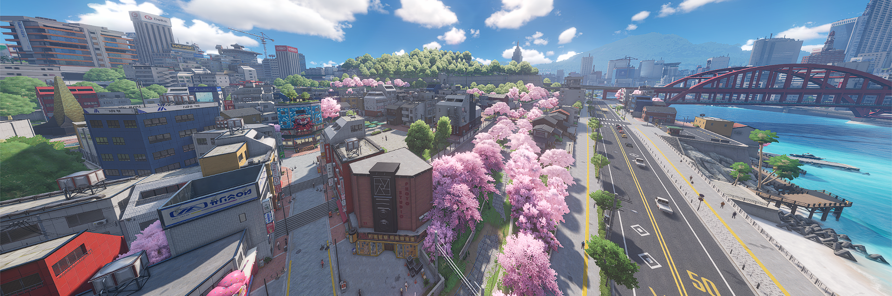
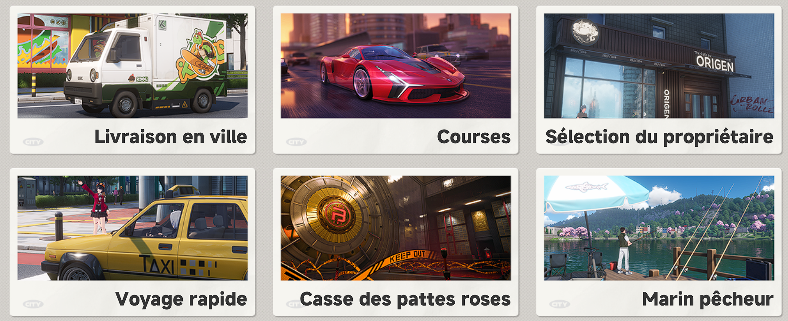
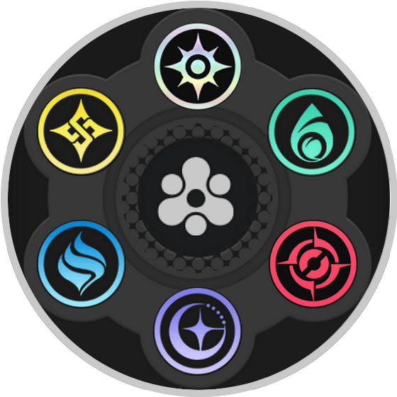

Tous les outils qu'il te faut pour évoluer dans le jeu !

Neverness to Everness (NTE) est un action-RPG en monde ouvert avec une composante gacha, développé par Hotta Studio. Si vous connaissez des jeux comme Genshin Impact ou Wuthering Waves, vous retrouverez rapidement des bases familières côté combat, mais NTE apporte sa propre identité avec un univers beaucoup plus centré sur la vie urbaine et la simulation.

Contrairement à beaucoup d’open worlds qui misent sur de vastes régions naturelles, ici l’aventure se déroule principalement dans Hethereau, une immense ville moderne servant de terrain de jeu principal. Entre ses différents quartiers, ses bâtiments visitables et les nombreux événements qui peuvent apparaître un peu partout, la ville donne vraiment l’impression d’être vivante.
L’univers du jeu repose aussi sur la présence d’anomalies, des phénomènes étranges qui font presque partie du quotidien dans ce monde. Vous incarnez un évaluateur travaillant pour le BAC (Bureau of Anomaly Control), au sein du groupe Eibon, chargé de gérer ces incidents. Certaines anomalies vous mèneront à des combats, d’autres à des situations bien plus inattendues.
Mais NTE ne se limite pas à enchaîner les affrontements. Une bonne partie du charme du jeu vient justement de tout ce qu’il propose en dehors du combat : courses, pêche, mahjong, gestion de boutique, et bien d’autres activités via le système Hethereau Hobbies.

Ces activités utilisent une ressource dédiée liée à la vie en ville, distincte de l’endurance utilisée pour le farm de matériaux et la progression des personnages. Bonne nouvelle : cette ressource est plutôt généreuse, donc inutile de stresser à chaque activité.
Au final, NTE mise autant sur l’exploration et l’ambiance que sur la progression pure. Entre les personnages avec lesquels passer du temps, la possibilité d’acheter un logement, les activités secondaires et les événements dynamiques, le jeu encourage clairement à prendre son temps et profiter de son univers.
Comme dans la plupart des jeux gacha, une grande partie des espers s’obtiennent via les tirages. Cela dit, tout n’est pas verrouillé derrière le gacha : certains personnages peuvent être récupérés gratuitement au fil de votre progression.
Le jeu propose même un personnage de haute rareté entièrement gratuit, copies incluses, via le système de Tycoon Leveling. Un bon exemple est Chiz, que vous pouvez obtenir sans dépenser vos ressources de tirage.
Si vous voulez en savoir plus sur les espers, jetez un œil à notre page dédiée :

Dans ce jeu, chaque équipe peut avoir jusqu'à quatre membres. Leurs attributs sont très importants pour le cycle Esper, qui est le système de team building le plus important de tout le jeu. Le cycle Esper se déclenche lorsque vous avez une unité dont les attributs sont adjacents à l'attribut du personnage actuel sur le terrain, vous permettant de les activer pour appliquer l'effet du cycle Esper.
Les arc sont les armes du jeu, ils permettent d'augmenter les caractéristiques de l'esper et d'accorder des effets. Il existe 5 types d'arc au total : solide, liquide, gazeux, plasma et synthèse.

Les consoles sont en gros les équipements des espers. Ils fonctionnent en deux parties : La cartouche qui détermine l'effet. Les modules : Qui eux donnent les caractériques et fonctionnent un peu comme le jeu Tetris.

Pour donner un petit récapitulatif : un cycle Esper est déclenché après avoir augmenter la jauge de cycle. Une fois prêt, l'esper avec une synergie d'attribut correspondante à l'esper actif affichera un indicateur dans la liste de l'équipe et au moment du switch déclenchera l'effet de cycle.

Ces attributs sont alors utilisés pour les effets de cycle.
Il y a également la possibilité d'additionner des cycles comme par exemple :
Vous devez garder à l’esprit que votre équipe compte un maximum de quatre personnages, vous ne pouvez donc pas accéder à tous les effets d’une seule équipe et devrez choisir entre eux.